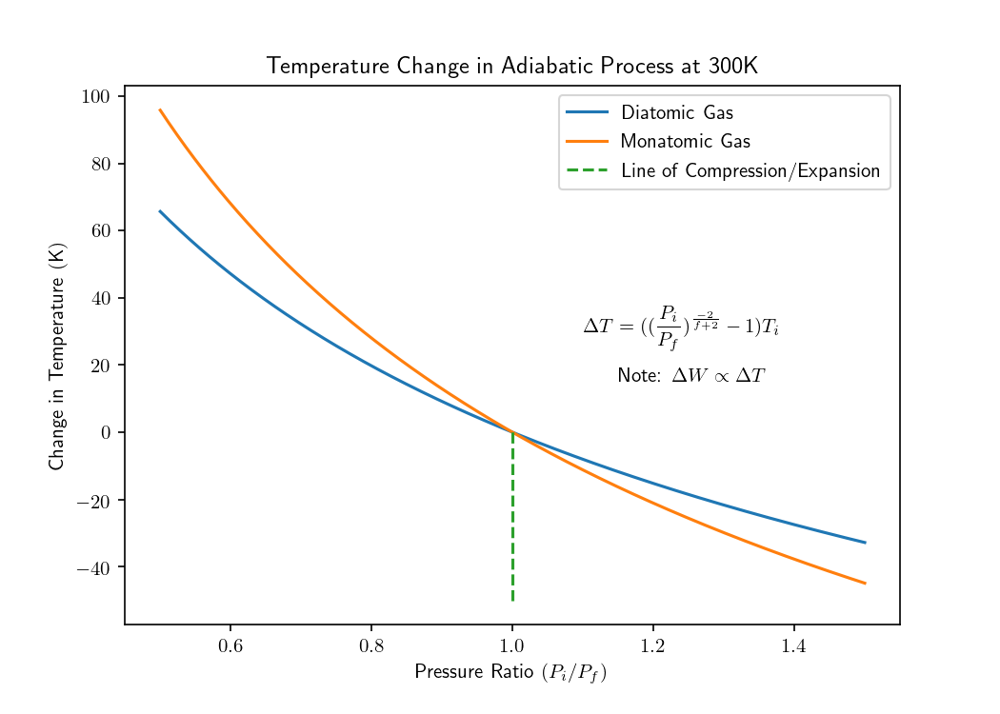
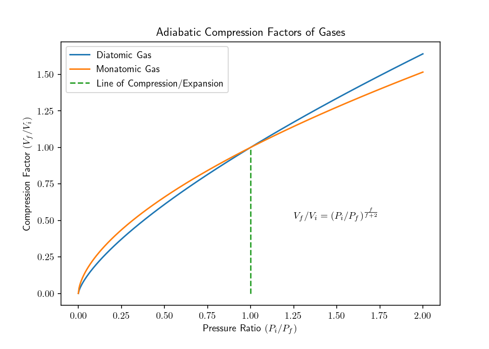

Pendulums
Let's see how we can use matplotlib to model pendulum motion.

Real and Approximated
Here we will examine qualitatively the applicabiltiy of the theta based model in modelling pendulum motion. Let's first consider releasing from an angle of π/3. Can you tell the difference?
No? Let's have a look at releasing from 2π/3.
Qualitatively, we deduce that the theta model does not match our intuition for how real pendulums behave at large angles.
def real_pendulum_ode(conditions, t, ℓ=0.2, g=9.8):
##current state of θ and ω is in the conditions list
θ, ω = conditions
dydt = [ω, -g/ℓ*sin(θ)]
return dydt
Solving the real system is as simple as calling odeint(real_pendulum_ode, init_conditions, t_interval). Imagine doing such a calculation with pencil and paper!
Electric Fields
An electron remains trapped in a potential energy well. If it were to aquire slightly more kinetic energy the electron would travel to infinity.
In this situation we consider the electric field observed at a region in space as a like-charged ring approaches passes co-centrically with our point of observation. The simulation starts and ends when the ring is equi-distant away from our position.
Adiabatic Processes
 subscribe via RSS